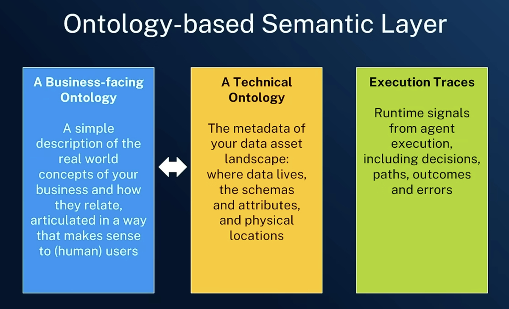
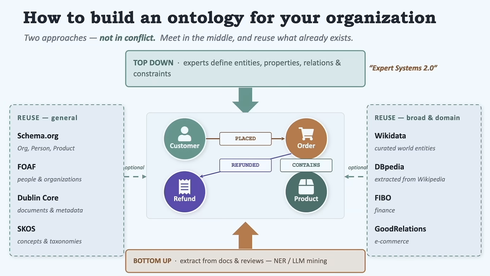
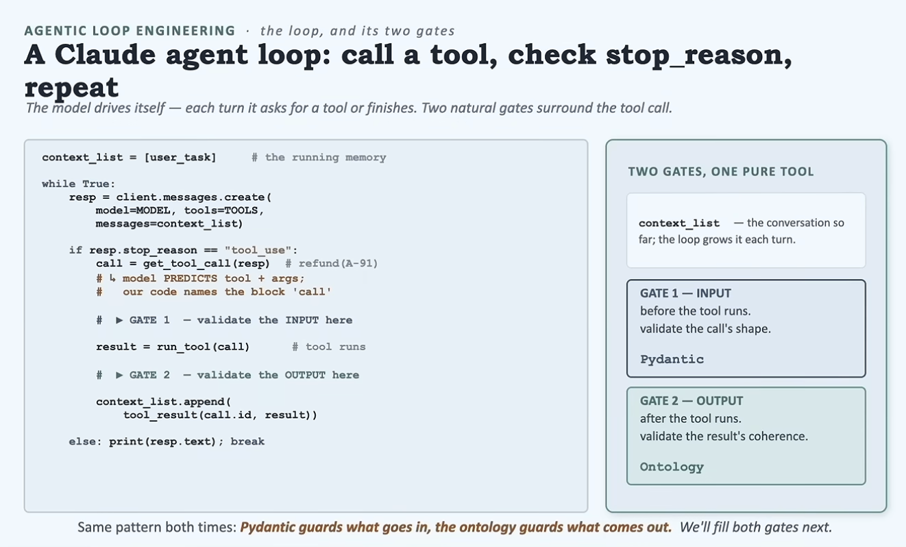
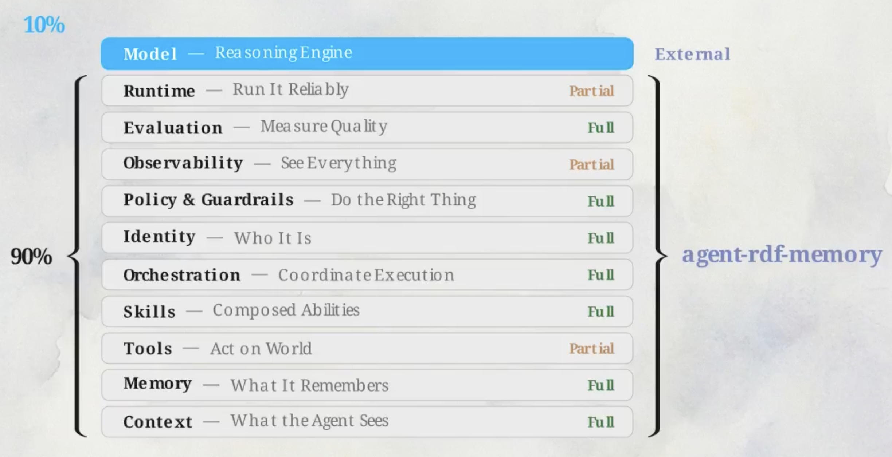
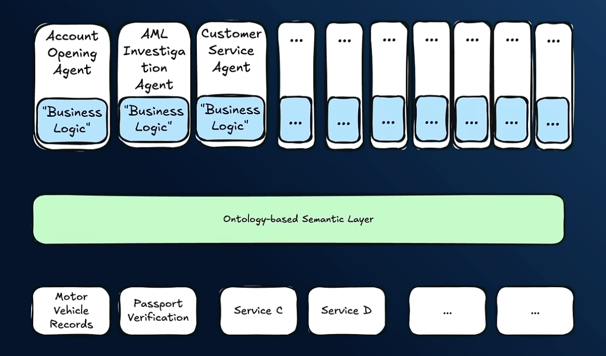
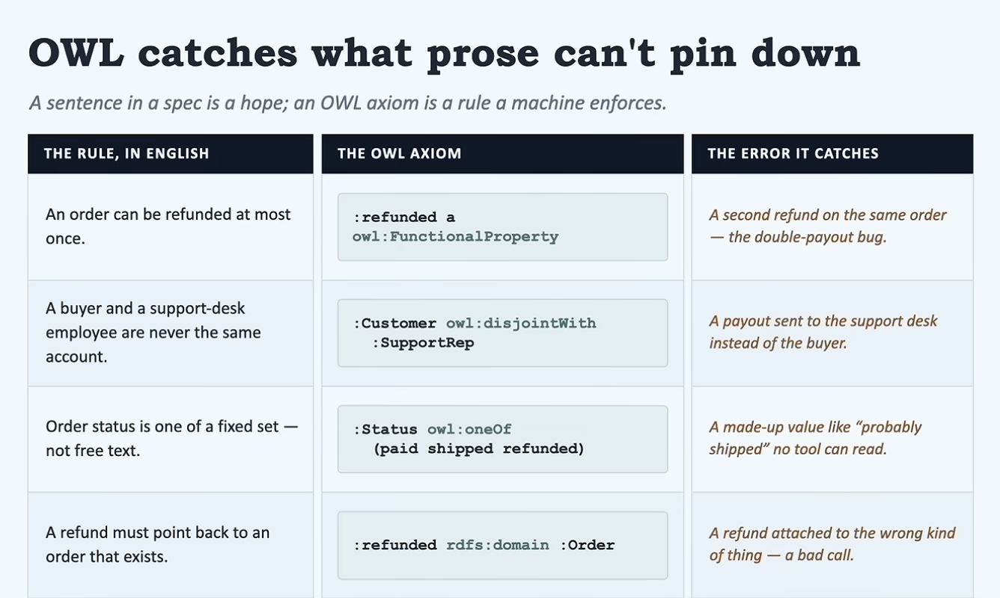

描述一个知识领域中的类、属性与关系。
“data as graphs”
Frank Coyle
概念可追溯至亚里士多德；在 AI 历史中，它一直承担知识表示的角色。
客户
订单
产品
下单
包含
LATENT.SPACE · AGENTIC SYSTEMS
AI 智能体为何重启语义网
概率推理 × 确定性边界 · Richard MacManus · 2026.07.30
核心命题
概率系统
LLM
擅长语言、推理与生成
开放、灵活、偶尔跑偏
本体
→
逻辑护栏
确定性系统
规则
定义实体、关系与约束
可计算、可检查、可执行
神经符号 AI：把神经网络接入符号规则，让生成能力运行在可验证边界内。
定义
描述一个知识领域中的类、属性与关系。
“data as graphs”
Frank Coyle
概念可追溯至亚里士多德；在 AI 历史中，它一直承担知识表示的角色。
客户
订单
产品
下单
包含
共享语义底座
01
业务本体
组织里的关键概念
02
技术本体
数据源与资产的元数据
03
执行轨迹
智能体运行时信号

旧技术，新杠杆

Schema.org、FOAF、Dublin Core、RDFS、OWL 已存在多年。
关键优势
它们已经出现在 LLM 的训练数据里。
开发者可以直接提示模型采用标准，而不是重新定义整个领域。
NEUROSYMBOLIC AI
LLM 推理
+
符号检查
=
可控智能体
工具执行并不是终点。结果回到本体层，检查类型、关系与规则，再决定继续、修正或停止。

结构化记忆

语言提供表达力
本体提供可计算上下文
RDF把记忆变成可查询图
现实账本
+
价值
成本
−
Semantic Web 当年没有普及的老问题，今天并未自动消失。
架构迁移

过去
厚智能体
每个智能体手工接线数据源，重复携带领域知识。
现在
薄智能体
把语义、元数据与轨迹放进共享底座。
LOOP ENGINEERING
观察
思考
行动
有界规则集
unbounded loop
inside bounded rules

可能的突破口
1
事实无法匹配现有定义
→
2
补充类型、关系或约束
→
3
reasoner 检查，人类审批
维护问题并没有消失，但它的性质变了：从离线文档工程，变成智能体运行的一部分。
落地蓝图
04
人类审批 · 版本 · 责任边界
03
OWL 规则 · 一致性检查 · 失败回路
02
业务本体 · 技术元数据 · 执行轨迹
01
LLM · tools · loop · RDF memory
建议：先从一个高风险决策点与一组小型规则开始，而不是建造“全企业本体”。
结论
01
LLM 提供
概率能力
02
本体提供
确定性语境
03
人类提供
治理与责任
来源：Latent.Space · “Ontologies Are So Back”